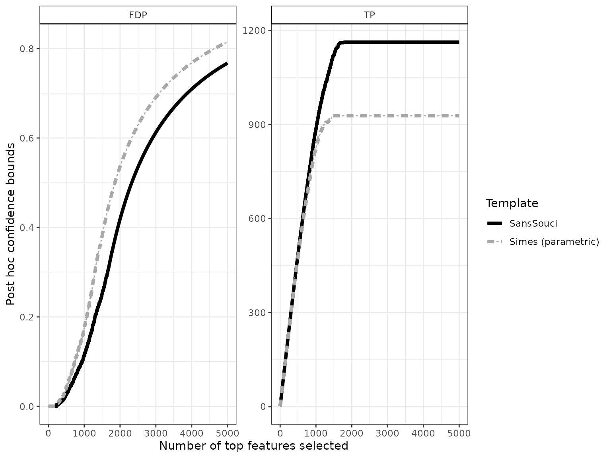
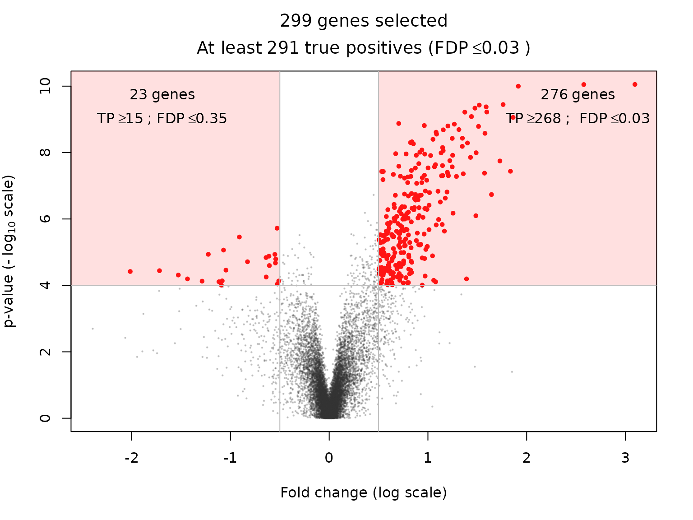

Permutation-based post hoc inference for differential gene expression studies: RNAseq data
Nicolas Enjalbert Courrech and Pierre Neuvial
2021-11-05
Source:vignettes/post-hoc_differential-expression_RNAseq.Rmd
post-hoc_differential-expression_RNAseq.RmdThis vignette illustrates the relevance of permutation-based post hoc bounds on false positives for the differential analysis of (bulk) RNA sequencing (RNAseq) data. We illustrate how the post hoc methods introduced by Blanchard, Neuvial, and Roquain (2020) may be used to
- build confidence curves (envelopes) for the true or false positives and defined differentially expressed genes accordingly
- perform statistical inference on the output of volcano plots
The methods described in this vignette have been introduced in the paper Blanchard, Neuvial, and Roquain (2020) and in the book chapter Blanchard, Neuvial, and Roquain (2021). A shiny application for volcano plots is also available from https://shiny-iidea-sanssouci.apps.math.cnrs.fr/.
require("ggplot2") || install.packages("ggplot2")
require("sansSouci") || remotes::install_github("pneuvial/sanssouci@develop")Set the seed of the random number generator for numerical reproducibility of the results:
set.seed(20200924)Motivation: a differential gene expression study
We focus on differential gene expression studies in cancerology. These studies aim at identifying genes whose mean expression level differs significantly between two (or more) populations, based on a sample of gene expression measurements from individuals from these populations.
data("RNAseq_blca", package = "sansSouci.data")
Y <- RNAseq_blca
groups <- ifelse(colnames(RNAseq_blca) == "III", 1, 0)
rm(RNAseq_blca)This data set consists of gene expression measurements for \(n = 270\) patients from the Cancer Genome Atlas Urothelial Bladder Carcinoma (TCGA-BLCA) data collection (Cancer Genome Atlas Research Network and others (2014)). These patients are classified into two subgoups, according to their clinical stage (II or III):
The goal of this study is to understand the molecular differences at the gene expression level between stage the II and stage III populations. For each patient, we observe a vector of \(m = 20196\) gene expression values. We aim at addressing the following question:
For which genes is there a difference in the distribution of expression levels between the stage II and stage III populations?
This question can be addressed by performing one statistical test per gene, and to define “differentially expressed” genes as those passing some significance threshold. Below, we use the Wilcoxon rank sum (or Mann-Whitney) test for comparing two independent samples. This is a rank-based non-parametric test. A fast version of this test is implemented in the sansSouci::rowWilcoxonTests function.
To obtain post hoc bounds, we create an object of class SansSouci and run the fit method to perform calibration with \(B=1,000\) permutations. The target risk level is set to \(\alpha = 0.1\), meaning that all of the statements made below will be true with probability greater than \(1-\alpha= 0.9\).
alpha <- 0.1
obj <- SansSouci(Y = log(1 + Y), groups = groups)
res <- fit(obj, B = 1000, alpha = alpha, family = "Simes",
rowTestFUN = rowWilcoxonTests)For comparison purposes we also run the (parametric) Simes method introduced by Goeman and Solari (2011):
Confidence curves for “top-\(k\)” lists
In the absence of prior information on genes, a natural idea is to rank them by decreasing statistical significance, and a natural question to ask is:
Can we provide a lower confidence curve on the number (or proportion) of truly differentially expressed genes among the most significant genes?
The confidence curve obtained by calibration is the solid black line in the figure below:
conf_bounds <- lapply(resList, predict, all = TRUE)
cols <- c("black", "darkgray")
plotConfCurve(conf_bounds, xmax = 5000, cols = cols) +
geom_line(size = 1.5)
This plot can be interpreted as follows: among the 2000 most significant genes, the number of truly differentially expressed genes is at least 1682 (right panel). Equivalently, the FDP among these 2000 genes is at most 0.16 (left panel).
The dashed gray curve is obtained by the parametric Simes method introduced by Goeman and Solari (2011). The comparison between the two curves illustrates the gain in power obtained by using permutations methods to adapt to the dependence between genes. In this example, the parametric Simes method gives the following guarantees: among the 2000 most significant genes, the number of truly differentially expressed genes is at least 1437 (right panel). Equivalently, the FDP among these 2000 genes is at most 0.29 (left panel).
Differentially expressed genes
In this section we show how to the above curves may be used to address the question:
Which genes are differentially expressed with high probability?
To do so, we define differentially expressed genes as the largest set of genes for which the FDP bound is less than a user-given value, for example \(q = 0.1\). This corresponds to drawing a horizontal line in the preceding plot:
q <- 0.1 # FDP budget (user-defined)
FDP <- lapply(resList, predict, what = "FDP", all = TRUE)
n_DEG <- sapply(FDP, function(x) sum(x <= q))
size <- 1.5
p <- plotConfCurve(FDP, xmax = 2.5*n_DEG, col = cols) +
geom_hline(yintercept = q, linetype = "dashed", size = size) +
geom_vline(xintercept = n_DEG, linetype = "dotted", col = cols, size = size)
p + geom_line(size = size)
ggsave(p, file = "conf-curve.pdf", width = 6, height = 4)Using \(q = 0.1\), we obtain 1597 differentially expressed genes. Note that this gene list has a clear statistical interpretation: with probability \(1-\alpha = 0.9\), the proportion of false positives (that is, genes that are called DE by mistake) is less than \(q = 0.1\).
The above example also illustrates the increase in power obtained by calibration, since the parametric Simes method yields a subset of “only” 1157 genes called differentially expressed (with identical statistical guarantees).
Comparison to FDR control
We argue that ensuring with high probability that the FDP is less than some user-defined budget, as done above, is more interpretable than the widely used False Discovery Rate (FDR) control introduced by Benjamini and Hochberg (1995). Indeed, FDR control guarantees that the expected (or average) FDP among DE genes is less than some user-defined FDR budget. However, the true FDP may well be far from its expected value, especially since the variability of the FDP is known to increase with the degree of dependence between genes.
adjp <- p.adjust(pValues(res), method = "BH")
FDR_level <- 0.05
n_BH <- sum(adjp < FDR_level)
n_BH
#> [1] 2711In our case, the BH procedure would consider 2711 genes as differentially expressed at the FDR level 0.05. This set of DE genes is larger than the 1597 genes called DE by our method, but the latter comes with stronger and more interpretable statistical guarantees than FDR control.
Volcano plots
A classical practice in gene expression studies is to define DE genes as those passing both a significance filter (small \(p\)-value) and an effect size or “fold change” filter. Here, the fold change of a gene is defined as the difference between the expression medians (on the log scale) of the two groups compared. This double selection by \(p\)-value and fold change corresponds to two sets of genes, with positive/negative fold change, which can be represented in the following plot:
volcanoPlot(res, p = 1e-4, r = 0.5)
This type of plot is called a “volcano plot” Cui and Churchill (2003). Post hoc inference makes it possible to obtain statistical guarantees on selections such as the ones represented in the above figure.
Custom statistics: example using limma-voom
Post hoc bounds can be calculated for any gene selection. In particular, even if Wilcoxon tests have been performed for the calibration of the post hoc bounds, it is possible to rely on other statistics to select genes of interest. In this section, we illustrate this idea by making a volcano plot based on the \(p\)-values and log-fold changes obtained from the limma-voom method of Law et al. (2014) implemented in the limma package (Ritchie et al. (2015)). The next code chunk is adapted from the vignette of the limma package:
library(limma)
library(edgeR)
d <- DGEList(Y)
#> Repeated column names found in count matrix
d <- calcNormFactors(d)
Grp <- as.factor(groups)
mm <- model.matrix(~0 + Grp)
y <- voom(d, mm, plot = FALSE)
res_lm <- lmFit(y, mm)
contr <- makeContrasts(Grp1 - Grp0, levels = colnames(coef(res_lm)))
res_fit <- contrasts.fit(res_lm, contr)
res_eb <- eBayes(res_fit)
TT <- topTable(res_eb, sort.by = "none", number = Inf)The next plot suggests that the \(p\)-values obtained from limma-voom and from Wilcoxon tests are consistent.
df <- data.frame(wilcox = -log10(pValues(res)), limma = -log10(TT$P.Value))
ggplot(df, aes(x = limma, y = wilcox)) +
geom_point(color = "#10101010") +
ggtitle("p-values (log-scale)")Finally we obtain the volcano plot based on limma statistics.
volcanoPlot(res,
fold_changes = TT$logFC,
p_values = TT$P.Value,
p = 1e-4, r = 0.5)
Session information
sessionInfo()
#> R version 4.1.2 (2021-11-01)
#> Platform: x86_64-pc-linux-gnu (64-bit)
#> Running under: Ubuntu 20.04.3 LTS
#>
#> Matrix products: default
#> BLAS: /usr/lib/x86_64-linux-gnu/blas/libblas.so.3.9.0
#> LAPACK: /usr/lib/x86_64-linux-gnu/lapack/liblapack.so.3.9.0
#>
#> locale:
#> [1] LC_CTYPE=C.UTF-8 LC_NUMERIC=C LC_TIME=C.UTF-8
#> [4] LC_COLLATE=C.UTF-8 LC_MONETARY=C.UTF-8 LC_MESSAGES=C.UTF-8
#> [7] LC_PAPER=C.UTF-8 LC_NAME=C LC_ADDRESS=C
#> [10] LC_TELEPHONE=C LC_MEASUREMENT=C.UTF-8 LC_IDENTIFICATION=C
#>
#> attached base packages:
#> [1] stats graphics grDevices utils datasets methods base
#>
#> other attached packages:
#> [1] edgeR_3.36.0 limma_3.50.0 sansSouci_0.12.4 ggplot2_3.3.5
#>
#> loaded via a namespace (and not attached):
#> [1] Rcpp_1.0.7 highr_0.9 compiler_4.1.2 pillar_1.6.4
#> [5] tools_4.1.2 digest_0.6.28 lattice_0.20-45 evaluate_0.14
#> [9] memoise_2.0.0 lifecycle_1.0.1 tibble_3.1.5 gtable_0.3.0
#> [13] pkgconfig_2.0.3 rlang_0.4.12 Matrix_1.3-4 yaml_2.2.1
#> [17] pkgdown_1.6.1 xfun_0.28 fastmap_1.1.0 withr_2.4.2
#> [21] stringr_1.4.0 knitr_1.36 generics_0.1.1 desc_1.4.0
#> [25] fs_1.5.0 vctrs_0.3.8 systemfonts_1.0.3 locfit_1.5-9.4
#> [29] rprojroot_2.0.2 grid_4.1.2 glue_1.4.2 R6_2.5.1
#> [33] textshaping_0.3.6 fansi_0.5.0 rmarkdown_2.11 farver_2.1.0
#> [37] magrittr_2.0.1 codetools_0.2-18 matrixStats_0.61.0 scales_1.1.1
#> [41] htmltools_0.5.2 ellipsis_0.3.2 colorspace_2.0-2 labeling_0.4.2
#> [45] ragg_1.2.0 utf8_1.2.2 stringi_1.7.5 munsell_0.5.0
#> [49] cachem_1.0.6 crayon_1.4.2References
Benjamini, Yoav, and Yosef Hochberg. 1995. “Controlling the False Discovery Rate: A Practical and Powerful Approach to Multiple Testing.” Journal of the Royal Statistical Society: Series B (Methodological) 57 (1): 289–300.
Blanchard, Gilles, Pierre Neuvial, and Etienne Roquain. 2020. “Post Hoc Confidence Bounds on False Positives Using Reference Families.” Annals of Statistics 48 (3): 1281–1303. https://projecteuclid.org/euclid.aos/1594972818.
———. 2021. “On agnostic post hoc approaches to false positive control.” In Handbook of Multiple Comparisons, edited by Xinping Cui, Thorsten Dickhaus, Ying Ding, and Jason C. Hsu. Handbooks of Modern Statistical Methods. Chapman
& Hall/CRC. https://hal.archives-ouvertes.fr/hal-02320543.
Cancer Genome Atlas Research Network, and others. 2014. “Comprehensive Molecular Characterization of Urothelial Bladder Carcinoma.” Nature 507 (7492): 315.
Cui, Xiangqin, and Gary A Churchill. 2003. “Statistical Tests for Differential Expression in cDNA Microarray Experiments.” Genome Biol 4 (4): 210.
Goeman, Jelle J, and Aldo Solari. 2011. “Multiple Testing for Exploratory Research.” Statistical Science 26 (4): 584–97.
Law, Charity W, Yunshun Chen, Wei Shi, and Gordon K Smyth. 2014. “Voom: Precision Weights Unlock Linear Model Analysis Tools for Rna-Seq Read Counts.” Genome Biology 15 (2): 1–17.
Ritchie, Matthew E, Belinda Phipson, Di Wu, Yifang Hu, Charity W Law, Wei Shi, and Gordon K Smyth. 2015. “limma Powers Differential Expression Analyses for RNA-Sequencing and Microarray Studies.” Nucleic Acids Research 43 (7): e47. https://doi.org/10.1093/nar/gkv007.